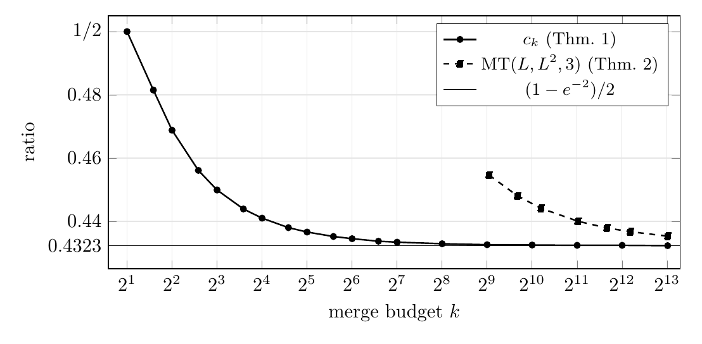
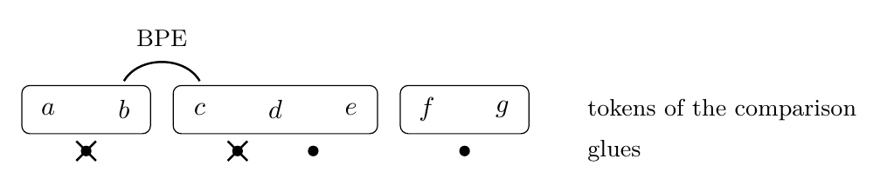
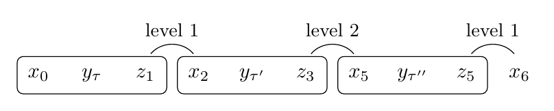
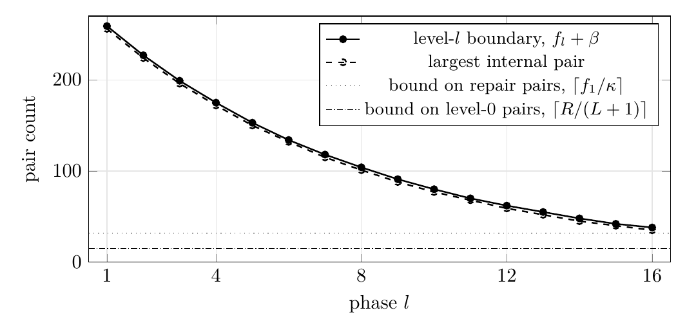

Byte-pair encoding can lose more than half of the optimal compression
The worst-case approximation ratio of byte-pair encoding is at most (1−e−2)/2 ≈ 0.4323, and against encodings whose tokens have length at most three that constant is exact.
Abstract
Byte-pair encoding (BPE) merges the most frequent adjacent pair of symbols, k times. Kozma and Voderholzer proved that, in the worst case, it achieves between 1/3 and 5/8 of the best compression utility. We lower the upper bound to (1−e−2)/2 ≈ 0.4323. In our strings the boundaries between the tokens of a good encoding come in L levels, with frequencies decaying by a factor 1−2/L, and BPE spends its budget on them. Against the best encoding whose tokens have length at most three, the constant is exact: one replacement by BPE destroys at most two of its savings. Our strings need an alphabet that grows with k.
Results
Worst-case bounds on BPE divided by the optimum. OPTflat is the best encoding whose tokens have length at most three.
| comparison | lower bound | upper bound | alphabet of the upper bound |
|---|---|---|---|
| OPT, before | 1/3 (Kozma–Voderholzer) | 5/8 = 0.625 (Kozma–Voderholzer) | five letters |
| OPT, this paper | 1/3 (Kozma–Voderholzer) | (1−e−2)/2 ≈ 0.4323 (Theorem 2) | grows with k |
| OPTflat, this paper | (1−e−2)/2 (Theorem 1) | (1−e−2)/2 (Corollary 1) | grows with k |

Why one replacement costs at most two savings
A greedy merge destroys savings of the comparison encoding next to the ones it takes. Kozma and Voderholzer charge each replacement for at most three of them; if every token has length at most three, only two can go. That gives the recurrence Gt ≥ (1−2/k)Gt−1 + U/k for the gain of BPE after t steps, and with it the constant.

The construction
The strings MT(L, F, β) place the boundaries between the tokens of a good encoding on L levels, with frequencies decaying by the factor 1−2/L. BPE merges the boundaries level by level and spends its whole budget there.


Computations
On each of these strings BPE equals the closed form of Lemma 4 exactly. The ratio is BPE divided by an explicit witness encoding of utility 2DF, an upper bound on BPE/OPT.
| L | F | β | letters |s| | k | BPE | witness | BPE/witness |
|---|---|---|---|---|---|---|---|
| 16 | 320 | 4 | 259,777 | 528 | 76,593 | 168,960 | 0.4533 |
| 16 | 640 | 2 | 510,049 | 528 | 150,018 | 337,920 | 0.4439 |
| 16 | 640 | 4 | 513,217 | 528 | 151,074 | 337,920 | 0.4471 |
| 16 | 640 | 8 | 519,553 | 528 | 153,186 | 337,920 | 0.4533 |
| 16 | 1280 | 4 | 1,020,097 | 528 | 300,201 | 675,840 | 0.4442 |
| 24 | 640 | 4 | 1,143,073 | 1,176 | 334,474 | 752,640 | 0.4444 |
| 24 | 1280 | 4 | 2,272,033 | 1,176 | 664,146 | 1,505,280 | 0.4412 |
| 32 | 1280 | 4 | 4,018,561 | 2,080 | 1,170,780 | 2,662,400 | 0.4397 |
The Zenodo record has the code that builds these strings, checks the hypotheses of Lemma 4 in
exact arithmetic and reruns BPE (reproduce.sh).
What it does not establish
- A better lower bound against the unrestricted optimum: it is still 1/3. Theorem 1 needs tokens of length at most three.
- Anything over a fixed alphabet: the construction uses about 7L2 distinct letters, and over a fixed alphabet the best upper bound we know of is 5/8.
- That the witness is optimal: the ratios in the table are BPE/witness.
- Anything about practical tokenisers with pre-tokenisation; the model is the abstract one of Kozma and Voderholzer.
The constant (1−e−2)/2 also appears in Zouhar et al. (2023) as their curvature bound at an estimated curvature of 2 on English text. The paper is AI-assisted; its disclosure section says how. It has not been peer reviewed.